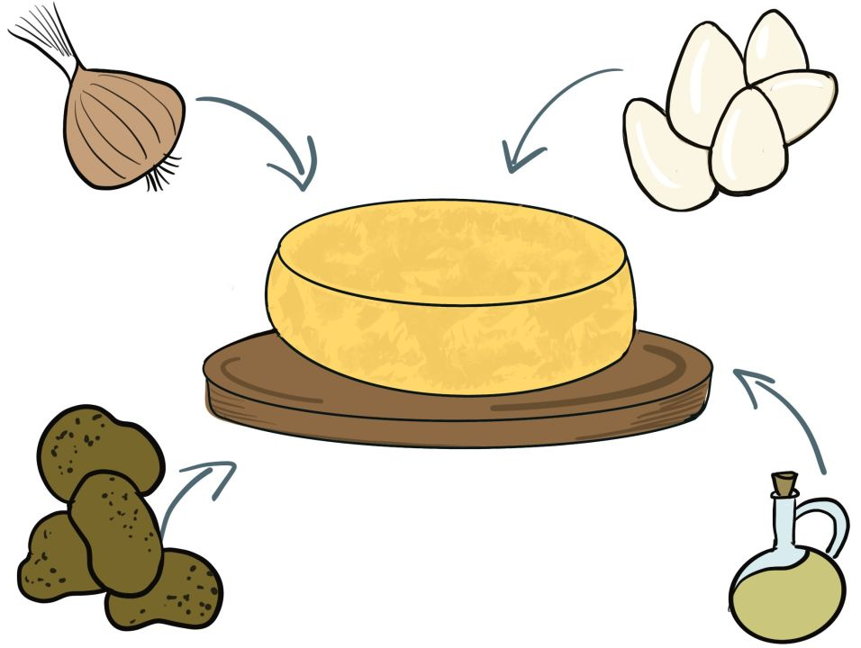
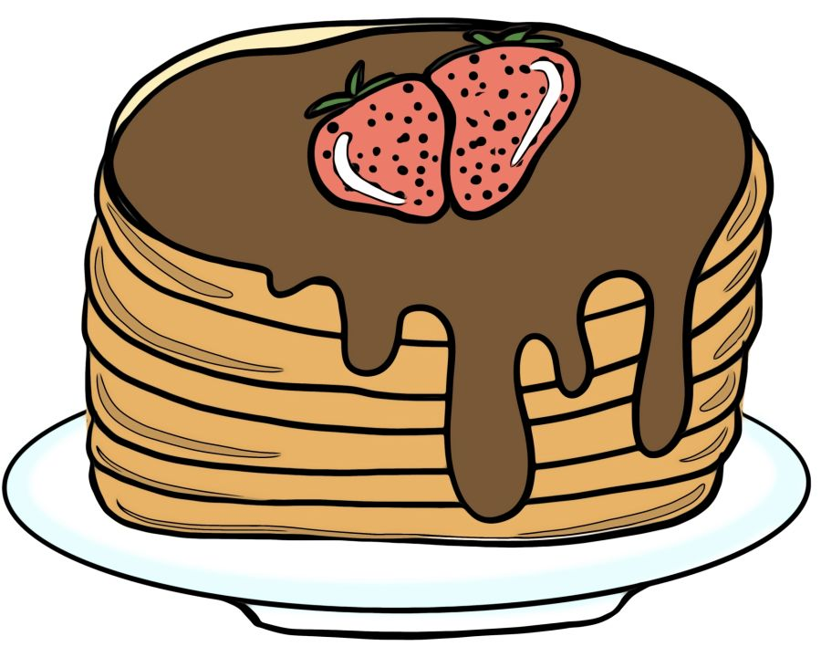

RED-CETAS
4.3. Ensalada de puntos
¿Sabes lo que es el punto? ¿Sabes cómo se utiliza? ¿Sabes cuántos hay?
Para escribir bien una receta hay que saber utilizar los distintos tipos de punto.
¡Vamos a verlos!
Lectura facilitada
¿Sabes lo que es el punto?
¿Sabes cómo se utiliza el punto?
¿Sabes cuántos tipos de puntos hay?
Para escribir bien una receta hay que saber usar los puntos.
¡Vamos a verlos!
Audio
1. El punto
El punto es un signo de puntuación (.).
Hay 3 tipos de punto:
- El punto y seguido: se usa para separar oraciones distintas dentro del mismo párrafo. Tras él se sigue escribiendo en la misma línea.
- El punto y aparte: sirve para separar dos párrafos distintos. Detrás de un punto y aparte se escribe en la línea siguiente, porque se inicia un párrafo nuevo.
- El punto y final: sirve para señalar el final de un texto.

Cuando leemos y aparece un punto, tenemos que hacer una pausa.
Lectura facilitada
El punto es un signo de puntuación (.)
Hay tres tipos de punto:
- El punto y seguido.
Sirve para separar oraciones distintas dentro del mismo párrafo.
Después de punto y seguido se sigue escribiendo en la misma línea. - El punto y aparte.
Sirve para separar dos párrafos distintos.
Después de punto y aparte se escribe en la línea siguiente.
Cuando se inicia otra línea empieza un párrafo nuevo. - El punto y final.
Sirve para señalar el final de un texto.
Cuando estamos leyendo y aparece un punto tenemos que hacer una pausa.
Audio
Lumen dice ¿Y después del punto?
Después de punto y aparte, y punto y seguido, la palabra que sigue se escribirá, siempre, con la primera letra en mayúscula.
2. Ahora ponlo en práctica

Es el turno del ejercicio individual de este bloque.
Ahora que ya conoces los distintos tipos de punto, vamos a practicar.
Elige la opción con la que te sientas más cómoda o cómodo.
¡Ánimo!
Opción A: Punto aquí y punto allá
Vamos a ver si has entendido los tipos de puntos que hay. Para ello vas a hacer esta actividad. Fíjate bien y no tengas prisa en contestar.
Opción B: Recetas en su punto
Kardia no sabe los tipos de puntos que hay. ¿Puedes ayudarle?
En esta receta rodea de color rojo los punto y seguido, de color verde los punto y aparte y de color naranja el punto y final.
Puedes utilizar esta plantilla.
{kind=link}
Opción C: Puntuando recetas
Lumen ha escrito una receta pero ha olvidado poner los puntos. ¿Puedes ayudarle a ponerlos?
Utiliza esta plantilla.

Opción D: Investigando puntos
Fíjate bien en estas dos recetas. Parecen iguales pero no tienen los puntos en el mismo lugar. ¿Cuál crees que es la opción correcta? ¿Por qué?
Utiliza esta plantilla.

Obra publicada con Licencia Creative Commons Reconocimiento No comercial Compartir igual 4.0